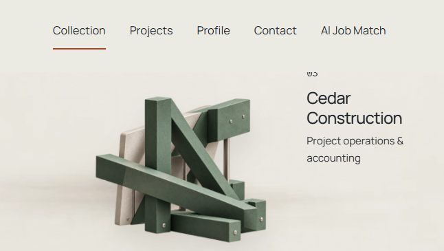
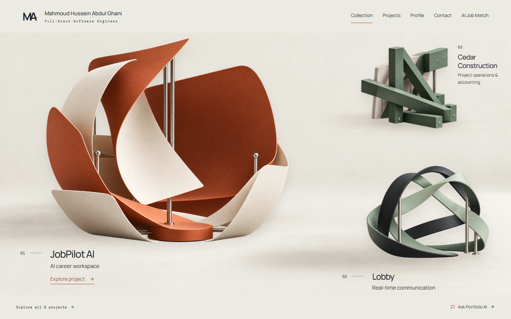
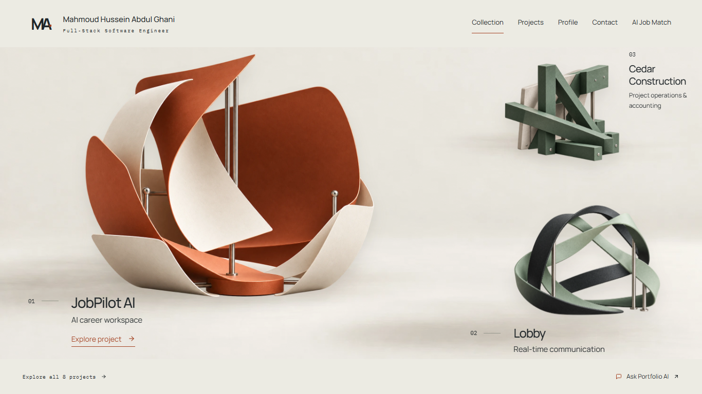
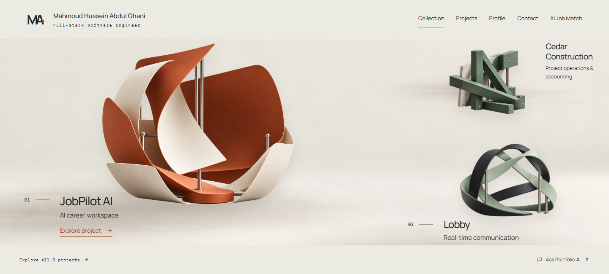
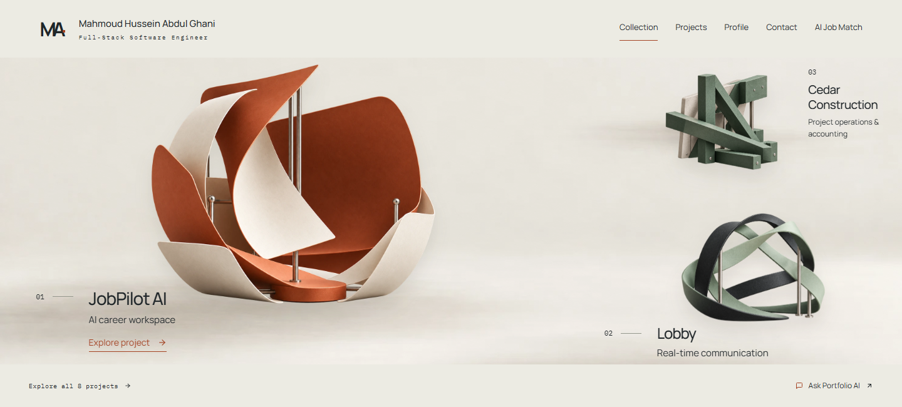
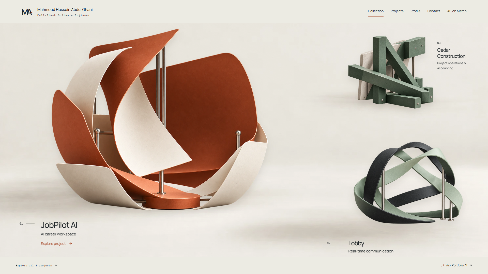
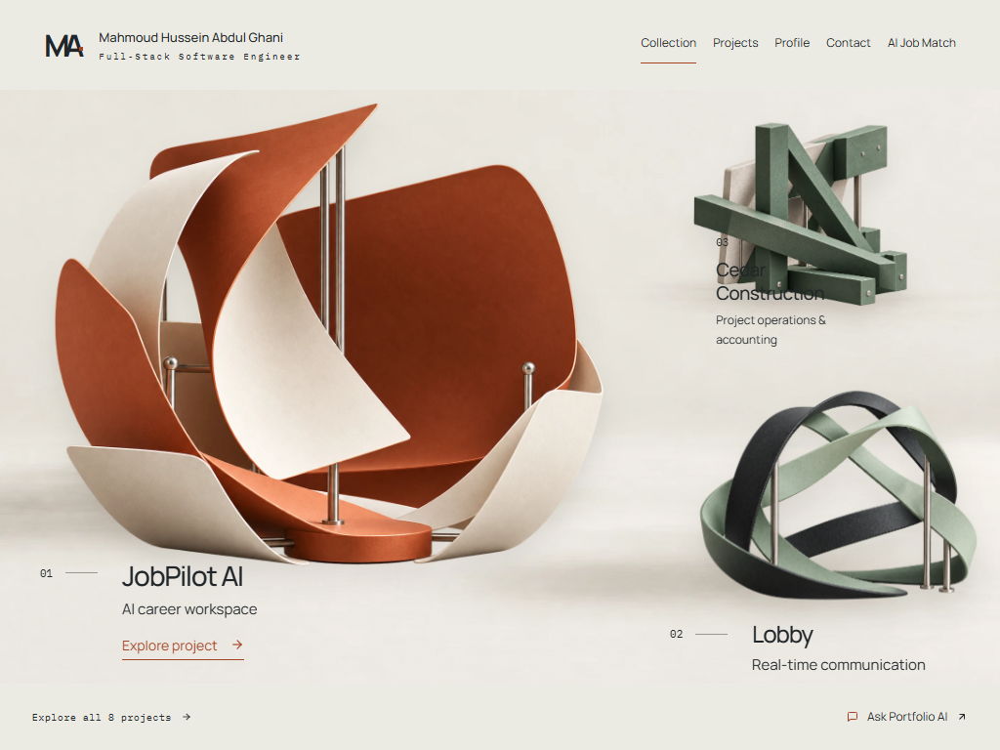

Cedar's number clears the navigation.
11 October 2026. Before: current production, captured during this audit. After: local compiled CSS fix using public GET records freshly fetched during the same audit. Actual artwork is unchanged. Chrome browser emulation, not a physical-device check. No production writes or deployment.
User-provided reference

Confirmed cause
The caption's bottom:48% anchor combines with a 116px caption height. In short desktop stages it places the number above the stage's top edge, behind the header. A safe top boundary and overflow-safe flex alignment keep the original lower alignment when it fits. The caption also stays inside its original clickable area near the desktop breakpoint. Artwork, selection motion, reading images and viewer controls are unchanged.
1440 × 900
Number top: 125.98px → 125.98px. Navigation ends at 92px. Before: clear; after: clear.
Current production
Local proposed fix 1366 × 768
Number top: 99.20px → 108.00px. Navigation ends at 92px. Before: clear; after: clear.
Current production
Local proposed fix 1280 × 720
Number top: 89.48px → 108.00px. Navigation ends at 92px. Before: clipped; after: clear.
Current productionLocal proposed fix
1440 × 650
Number top: 75.28px → 108.00px. Navigation ends at 92px. Before: clipped; after: clear.
Current production
Local proposed fix
1920 × 1080
Number top: 162.48px → 162.48px. Navigation ends at 92px. Before: clear; after: clear.
Current production
Local proposed fix 1120 × 600
Number top: 75.28px → 108.00px. Navigation ends at 92px. Before: clipped; after: clear.
Current productionLocal proposed fix
646 × 365
Number top: 621.98px → 621.98px. Navigation ends at 125px. Before: clear; after: clear.
Current productionLocal proposed fix
390 × 844
Number top: 689.48px → 689.48px. Navigation ends at 125px. Before: clear; after: clear.
Current productionLocal proposed fix
768 × 1024
Number top: 353.28px → 353.28px. Navigation ends at 92px. Before: clear; after: clear.
Current productionLocal proposed fix
1024 × 768
Number top: 241.47px → 241.47px. Navigation ends at 92px. Before: clear; after: clear.
Current production
Local proposed fix Scope and limits
Only the desktop Cedar caption is adjusted. Wide-window positions and phone/tablet composition remain intact. The new regression checks all caption text bounds at seven desktop sizes; Firefox and emulated phone WebKit are tested separately. Existing tablet opening instability remains a separate documented issue. The local fix is not live until separately deployed.